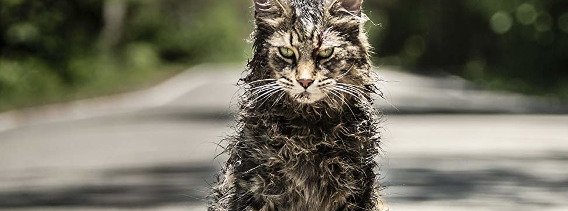

Vamos por um pouco de ação nessa lista?:
#1. Machete
Machete é praticamente um trash de ação. Danny Trejo não é conhecido por ser um excelente ator,
mas por incorporar personagens carrancudos, o que não surgiu de graça. Antes de se tornar ator, Trejo esteve preso
(tendo vencido diversos campeonatos de boxe nesse período) e foi durante seu processo de reabilitação para largar o
vício por cocaína que ele ganhou seu primeiro papel e deixou a vida de crimes para trás. O conhecimento de causa dá ainda
mais veracidade aos personagens de Trejo, mas o fato de hoje ser um carrancudo bonzinho o coloca na posição perfeita para
interpretar personagens cômicos, como o pai de Rosa Diaz na série Brooklyn 99.
Ele interpretou Machete pela primeira vez
no projeto Grindhouse de Quentin Tarantino e Robert Rodriguez, uma homenagem aos filmes setentistas do gênero exploitation.
Traduzindo: grindhouse eram salas de cinemas menores, comuns nos anos 1970, que não exibiam os filmes mais famosos do momento,
optando geralmente pelo lançamento de títulos menores, de baixo orçamento e bastante apelativos. Machete era um dos trailers
falsos que aparecem na exibição conjunta de Planeta Terror e À Prova de Morte.
Machete segue a mesma lógica dos exploitations,
mas com a pegada do Robert Rodriguez, ou seja, um trash consciente, com o que há de pior no gênero potencializado até o ponto
de ser cômico. Machete é grosseiro e violento, mas também é um brutamontes galã improvável. O sucesso do filme foi tamanho que
a sequência, Machete Mata, ganhou um elenco ainda mais repleto de figuras de peso além da participação de Lady Gaga. Agora,
os fãs aguardam Machete Kills in Space.
Assista aqui: Filme Completo
#2. Cemitério Maldito
O clássico cult (ou quase isso) baseado em um livro de Stephen King — e roteirizado pelo próprio — acompanha um pai enlutado que, após uma tragédia, descobre um antigo cemitério atrás de sua casa com o poder de ressuscitar os mortos. O filme é tido por muitos como bizarro, para outros até um tanto tosco, mas a direção de Mary Lambert, que vinha de videoclipes de Janet Jackson, Madonna, Rod Stewart, Sting e outros, é envolvente a ponto de conseguir uma suspensão de realidade muito genuína. Com isso, até mesmo risadas involuntárias podem se tornar aliadas de um filme que é a cara dos anos 1980.
Assista aqui: Filme Completo